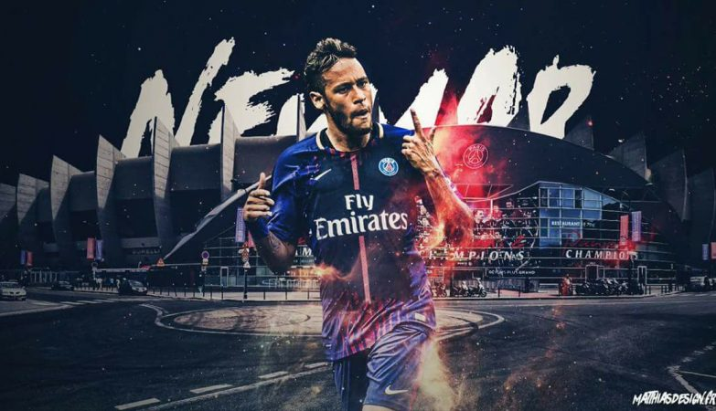

Neymar Jr., cujo nome completo é Neymar da Silva Santos Júnior, é um renomado jogador de futebol brasileiro. Nascido em 5 de fevereiro de 1992, ele rapidamente ganhou destaque no cenário internacional com suas habilidades extraordinárias e estilo de jogo criativo. Sua carreira teve início no Santos FC, onde impressionou com sua velocidade, dribles habilidosos e capacidade de marcar gols. Em 2013, Neymar fez uma transferência marcante para o Barcelona, onde formou uma notável parceria com Lionel Messi e Luis Suárez, conquistando diversos títulos, incluindo a UEFA Champions League.
Em 2017, Neymar fez uma mudança igualmente significativa para o Paris Saint-Germain (PSG), em uma transferência recorde. No PSG, ele continuou a brilhar e ajudou o clube a conquistar títulos nacionais. Além de sua atuação nos clubes, Neymar é uma peça-chave na seleção brasileira, participando em várias Copas do Mundo e outros torneios internacionais.
Apesar de sua destreza dentro de campo, Neymar também atraiu atenção por sua personalidade extravagante e às vezes controversa. Fora do futebol, ele é um ícone de estilo e tem uma presença marcante nas redes sociais. No entanto, algumas controvérsias e lesões têm influenciado sua jornada ao longo dos anos. Mesmo assim, Neymar Jr. continua sendo uma das figuras mais conhecidas e talentosas do mundo do futebol.